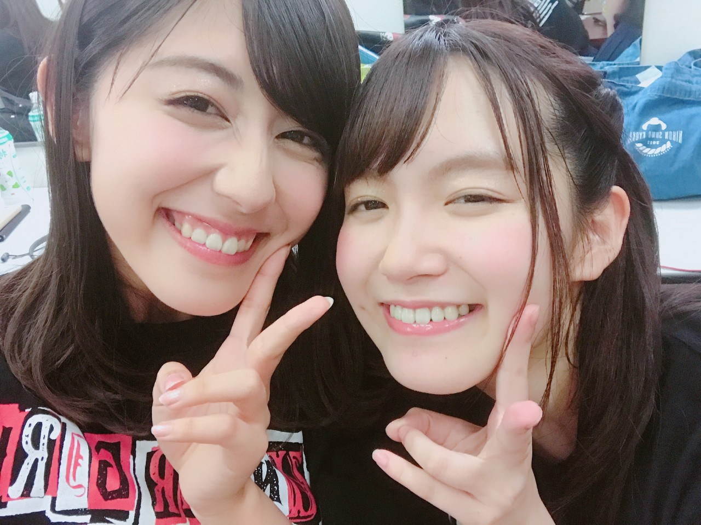
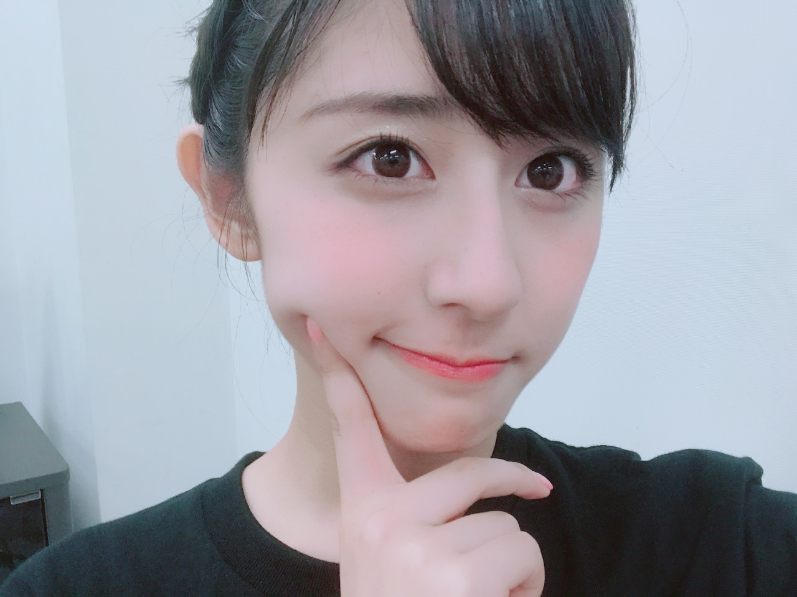
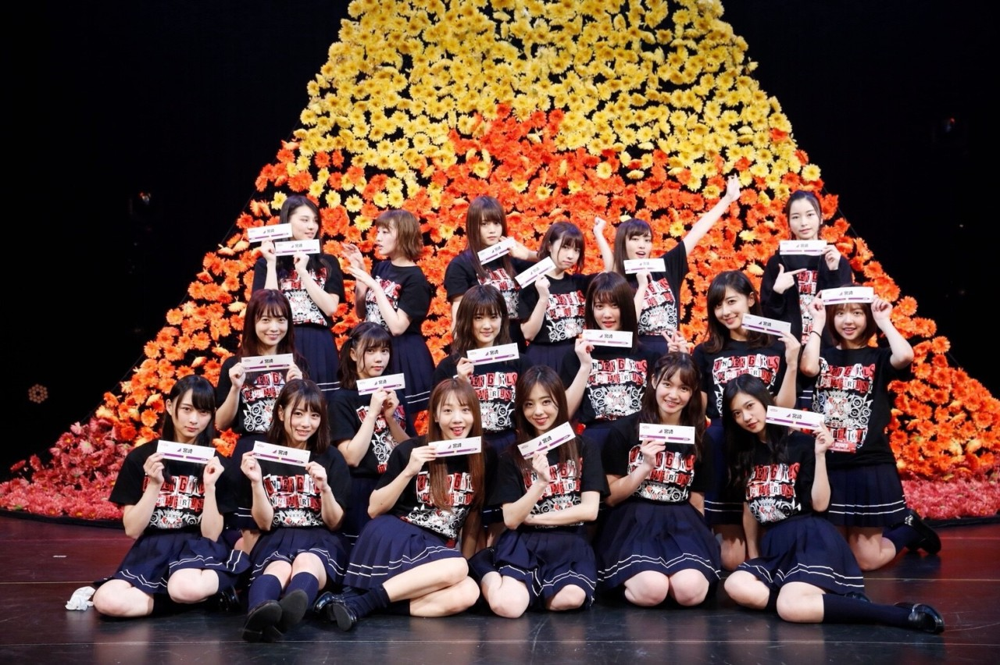
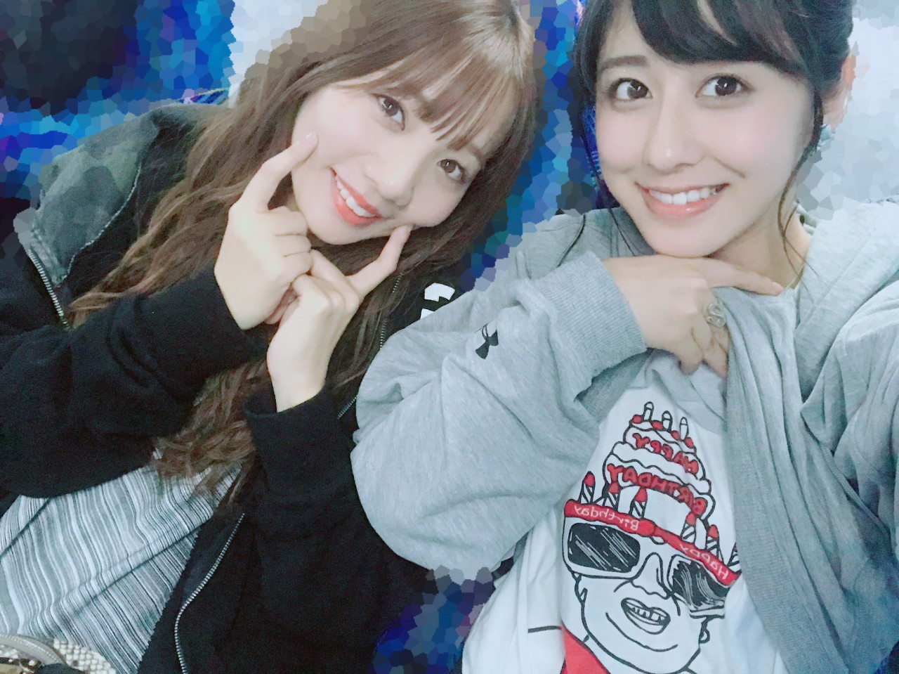
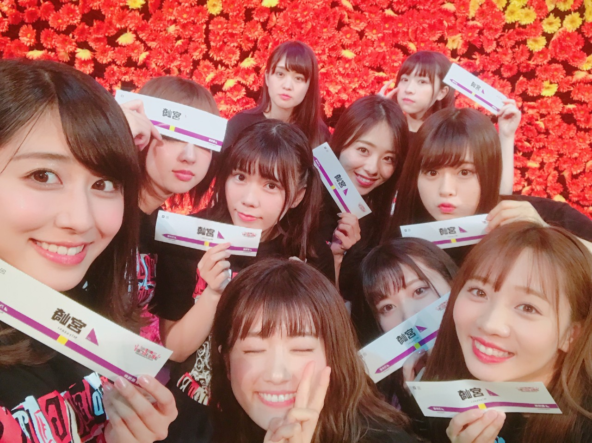

| 2017/10 22 Sun | 斎藤ちはる 九州ありがとう |
ちはるーむへようこそ
アンダーライブ全国ツアー九州シリーズが
無事終了致しました！！
来てくださった皆さんありがとうございました☺︎

にっこにこめーちゃん♡
九州から帰ってきたら、
家のパジャマが全て冬仕様に変わっていたり、
ヒートテックやコートを着ないと
耐えられない気温になっていたり...
びっくりしました！
もう秋を通り越して冬がやってきましたね( ´ｰ`)
そして今日の夜中から明日の朝にかけては
大型の台風が...！
皆さんお気をつけてください(> <)

さて今回のアンダーライブは
前半は今までのアンダーライブのように、
とにかく全力で歌を届けさせていただきました！
沢山歌って沢山踊って沢山汗かいて...
楽しかったです！
途中には今までのアンダーライブの定番、
ここでしかみられないユニットコーナーを
披露致しました◎
私は、かりんと２人で「隙間」を
歌わせていただきました！
振りはなく、歌だけで届けるのは
おそらく始めてだったと思います
苦戦したことも沢山あるけど、
私たちの歌を聴いて
皆さんが拍手を送ってくださった瞬間
頑張って良かったと思えました。
本当に嬉しかったです！
今回だけで終わってしまうのは悲しいけど
かりんと２人で歌えて良かった☺︎
楽しかったね！またやりたいね！
かりんありがとう\( ˆ ˆ )/
後半戦は私たちの感情を表現しました。
アンダーメンバーとしての苦しみや、悔しい、という後ろ向きな気持ちもあれば、
もっと上に行きたいという前向きな気持ちもある。
そんな気持ちを曲や歌詞に乗せて
パフォーマンスさせていただきました。
時々気持ちが入りすぎてしまって
涙が溢れる瞬間もありましたが...
皆さんの心に響いてほしい、
皆さんに伝わってほしい、
という願いで行なってきました。
自分自身、改めて前を向いて歩いていきたいと
強く思えました。

そしてアンダーライブ期間中は
愛未の23歳の誕生日を迎えました！
近くにいたメンバーに声をかけて
00:00ぴったりに愛未の部屋に押しかけました！
驚きつつ、とっても喜んでくれて
嬉しかったな〜☺︎

当日はバースデー仮面Tシャツで
お祝いしました(๑¯ω¯๑)笑
おめでとう愛未♡らぶ
九州シリーズ最終日での宮崎では
なんと「近畿・四国シリーズ」開催の発表がありました！
19thメンバーで回らせていただきます。
どんなライブになるのか...？
とっても楽しみです！
皆さん待っていてくださいね！

斎藤ちはる